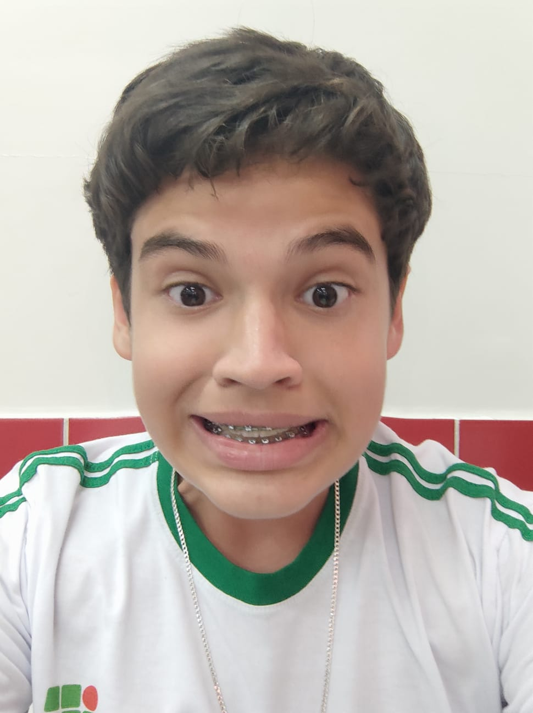

Introdução: Um pouco sobre mim
Meu nome é Raphael Lombardi, tenho 15 anos e atualmente sou estudante e bolsista do Instituto Federal do Paraná: Campus Assis Chateaubriand (atualemente pelo PACE). Busco através deste currículo digital me candidatar à uma vaga de estágio meio período (de preferência noturno) tanto no setor administrativo, quanto para desenvolvimento Web e auxiliar de TI. Atualmente estou cursando o Curso Técnico em Informática para Web Integrado ao Ensino Médio durante o período matutino e duas tardes semanais.
Durante meu corrente desenvolvimento no IFPR, fui eleito vice-líder da minha turma (IIW25) e hoje sou o estudante da turma com a maior média de notas nos dois primeiros bimestres do meu curso.
- Nome: Raphael Lombardi de Mello Norbiato
- Idade: 15 Anos
- Ocupação: Estudante (ensino médio)
- Email: raphael.talvezsim@gmail.com
- Telefone: (44) 98888-8888
- Período disponível: Notuno (18:00 ~ 23:00)